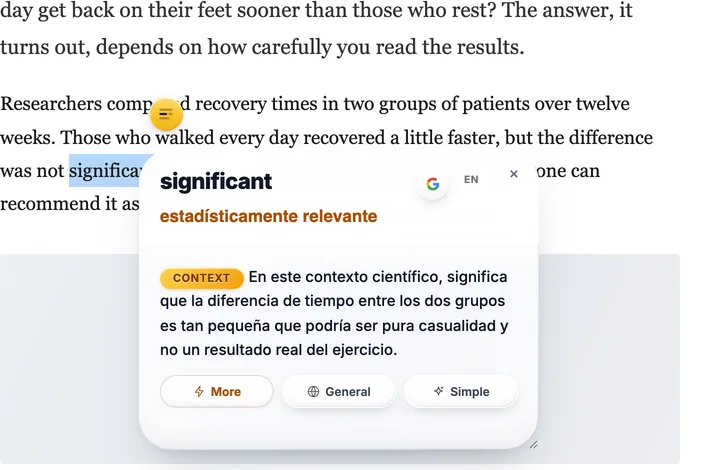

The three ways it goes wrong
1. You translated the word alone
When you copy one word into the box, you throw away the part that decides what it means. The translator has nothing to work with, so it gives you the everyday meaning. Put the whole sentence in and you often get a different answer. This one thing fixes most bad translations.
2. The subject is specialist, the word is not
Every field takes normal words and gives them its own meaning. In medicine, a culture is a sample grown in a lab to find bacteria, and a positive result is bad news. In law, consideration is what each side gives, not being thoughtful. In statistics, significant means the result is probably not chance, not that it is big. The translator has read far more everyday text than lab reports, so it goes with the everyday meaning.
3. It reads well and is still wrong
These tools are built to give you a sentence that sounds natural. A smooth sentence with one word wrong still sounds right, so nothing tells you to check. That is the dangerous one: the translation feels fine, and the word you were stuck on is the word it lost.
Why it happens
Since 2016 Google Translate reads a whole sentence at a time instead of word by word. That is why it sounds natural now. But the sentence is also where it stops. It does not know what the page is about, what field you are reading, or which word you got stuck on. It gives the version that fits an average sentence.
A dictionary has the opposite problem. It gives you every meaning and lets you choose. That only helps if you already know enough to choose. So there is a question in the middle that neither one answers: what does this word mean here, in this sentence?
The culture came back positive after forty-eight hours, so the ward started antibiotics.
The everyday meaningCulture as art, music and customs. Positive as good news. Those are the common meanings, and here both of them are wrong.
What the sentence saysA sample was grown in a lab, bacteria were found, treatment started. The words that tell you this are ward and antibiotics, and they sit outside the word you selected.

Four things that actually help
Give it the sentence, not the word
Paste the whole sentence, or the whole paragraph. It takes two seconds and it fixes most of these. If you only care about one word, read the translated sentence and find the word inside it.
Translate it back
Take the answer and translate it back into the first language. If you do not get the word you started with, the meaning changed somewhere. It is a rough check, but it catches the bad ones.
Ask what the text is about
Before you trust the answer, say what you are reading: a drug trial, a rent agreement, a bug report. Almost every wrong translation is a word taken out of its field, and you can see that faster than any tool.
Use something that reads the sentence
Reverso Context shows you the word in many real sentences, and you pick the one closest to yours. Context Reader, the extension I build, does it the other way: select the word, and it sends the paragraph with it, then tells you the one meaning that fits, in your language, without leaving the page.
Where translation is still the right tool
None of this makes Google Translate bad. For a page in a language you cannot read at all, for travel, for a message from someone at work, it is the fastest thing we have and it is good enough. Just know which job you have. Turning a text into your language is one job. Understanding one word in a text you can mostly follow is another. Translation is built for the first one. The second one is where it lets you down quietly.
If English is not your first language, the companion piece is how to understand English words when it isn’t your first language — the same problem from the reader’s side, with four habits that need no tool.
Questions
Is Google Translate accurate?
For whole sentences between big languages, yes, it is good and getting better. It is weakest on a single word with several meanings, on specialist terms, and on idioms. Those are the cases where the right answer depends on what the text is about.
Why does a word on its own translate differently?
Because a word alone has no context. The tool reads the sentence to decide the meaning, so when there is no sentence it falls back on the most common meaning. Paste the whole sentence and the answer often changes.
Why does Google Translate change a word when I add more text?
Because it translates whole sentences. With one word it has nothing to work from and gives you the most common meaning; with the sentence it can see the subject and often picks a different, better word. The second answer is usually the one to trust.
How do I know which meaning a sentence is using?
Say what the text is about, then take the meaning that belongs to that subject. In a lab report, a culture is a sample grown to find bacteria. In a company, culture is how people work. You can also translate the answer back: if you do not get your original word, the meaning drifted.
Is there a tool that explains the word for my sentence?
Yes. Context Reader, the free extension I build, sends the word with the paragraph around it and gives you the one meaning that fits, in your language. Reverso Context does it another way, by showing the word in many real sentences so you can pick the closest one.
Free. Chrome, Brave and Edge install from the Chrome Web Store; Firefox from addons.mozilla.org. It needs your own free Gemini API key, which takes about a minute to get.